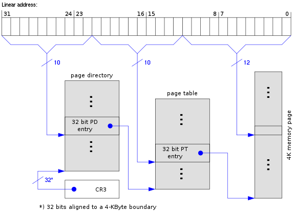
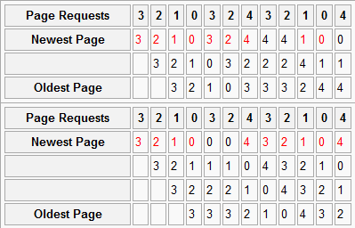
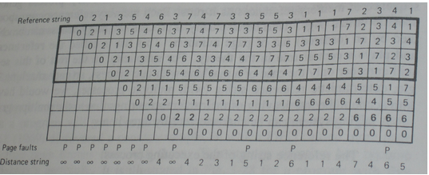
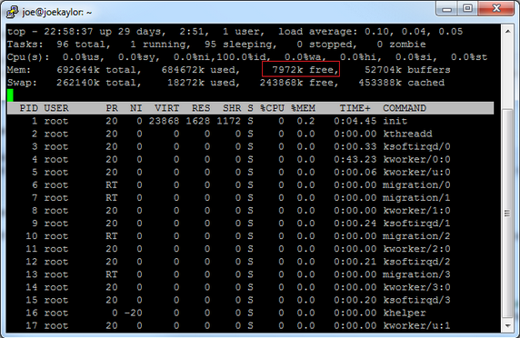

Virtual Memory#
Virtual memory is the operating-system layer that gives each process its own address space. It lets the kernel separate process memory from physical memory and decide which pages should be resident, shared, protected, or backed by storage.
What is Virtual Memory?#
Virtual memory gives a process a private view of memory that does not directly match the machine’s physical memory.
This supports several operating-system goals:
Programs can run even when their total virtual memory use is larger than available physical memory.
File I/O can be buffered and cached in memory.
Processes can share pages, such as executable code or shared library text.
The kernel can enforce memory protection between processes.
Virtual addresses can be translated to physical addresses by hardware and kernel-managed tables.
Memory Management Units#
The memory management unit, or MMU, is the hardware that translates virtual addresses into physical addresses.
The MMU also enforces memory protection and works with structures such as page tables and the translation lookaside buffer. In modern systems, the MMU is usually part of the CPU. When a process accesses memory, the CPU and MMU use the current process’s page tables to decide where the access goes and whether it is allowed.
Pages and Page Tables#
A page is a fixed-size block of virtual memory. A page table records how virtual pages map to physical pages.
Every process appears to have access to a large address space, but only some of that address space is actually mapped and resident at any given time. The operating system maintains page tables so the MMU can translate virtual addresses and enforce permissions.
Page Table Size#
Page size affects page-table overhead.
If a 32-bit system used 128-byte pages, it would need more than 33 million page entries to describe a 4 GB address space. Even with very compact entries, that overhead would be too large for each process.
With 4 KB pages, a 4 GB address space has 1,048,576 virtual pages. On 32-bit x86, each page-table entry is 32 bits, so a flat page table would still require about 4 MB per process. That is too much overhead for a small process.
Page Table Entries#
A page-table entry stores the physical page number and attributes for a virtual page.
For a 4 KB page in a 32-bit address space, 20 bits identify the page and 12 bits remain for flags and other information. Common attributes include whether the page is present, writable, executable, and modified.
Multi-Level Page Tables#
Multi-level page tables reduce memory overhead by allocating lower-level tables only for address ranges that are actually used.
In a two-level page table, part of the virtual address selects a first level entry, and another part selects a second level entry. The first level covers large regions. The second level is created only when a process actually uses pages in that region.
Two-Level Page Table#
The two-level page-table diagram shows how a virtual address can be split into indexes and an offset.

MMU Address Translation Algorithm#
Address translation first checks the TLB. If the translation is not cached, the MMU and kernel page-table structures are used to find the physical page.
physical_address translate(virtual_address v_addr) {
physical_address addr;
if(tlb.contains(v_addr)) {
addr = tlb[v_addr];
} else {
first10 = (v_addr >> 0x16) & 0xa;
second10 = (v_addr >> 0xc) & 0xa;
level_1 = page_table_1[first10];
entry = level_1[second10];
physical_page = (v_addr >> 0xc) & 0x14;
if(physical_page >> RESIDENT_OFFSET & 0x01 == 0) {
generate page fault;
}
addr = (physical_page << 0xc) & (v_addr & 0xc);
tlb[v_addr] = addr;
}
return addr;
}
Key points:
The TLB caches recent virtual-to-physical translations.
A TLB miss requires a page-table lookup.
Page-table entries contain both page addresses and permission or status bits.
A nonresident page causes a page fault.
Once translation succeeds, the result can be cached in the TLB.
Page Faults#
A page fault is an exception raised when a memory reference cannot be completed using the current page-table entry.
Common causes include accessing a page that is not resident in physical memory, writing to a read-only page, or executing from a non-executable page. The operating system decides whether the fault can be repaired or whether the process must be notified or terminated.
Page Faults in UNIX#
UNIX systems usually handle nonresident pages by loading the page and retrying the instruction.
If the page cannot be loaded because memory is exhausted, the process may
fail or the system may take stronger action. If the access violates
permissions, the kernel normally sends SIGSEGV to the process.
Page Faults in Windows#
Windows also handles nonresident pages by loading the page and retrying the instruction when possible.
If the fault cannot be repaired, Windows raises an exception in the faulting process. Permission faults are also reported through the exception mechanism.
Page Replacement and Swapping#
Page replacement is the policy for choosing which physical page to reuse when memory is needed.
The swapper moves pages between physical memory and slower backing storage. It handles heap and stack pages, and it may also demand-page program text so execution can begin before the full program is loaded.
When the Swapper Runs#
The swapper runs when a needed virtual page is not resident or when the system needs more free physical pages.
The operating system may also reclaim memory when a page would be more useful for another process, the filesystem cache, or another kernel purpose. The swapper is therefore part of both memory protection and overall system performance.
Physical Page Contenders#
Many uses compete for physical pages.
Important contenders include the filesystem cache, shared memory regions, memory mapped files, executable and library text, process stacks, process heaps, and device DMA buffers. Some DMA regions must not be swapped because a device is using the physical address directly.
Swapper Algorithms#
A page replacement algorithm tries to minimize expensive page faults.
Useful measures include the total number of page faults, the page faults an optimal algorithm would have produced, and the working set of pages a process is actively using. No real algorithm can predict the future, so replacement policies approximate likely future behavior from recent history.
Page Classification#
Many processors record whether a page has been referenced or modified.
These bits divide pages into four classes:
Not referenced and not modified.
Not referenced and modified.
Referenced and not modified.
Referenced and modified.
The operating system can clear reference bits periodically to estimate which pages have been used recently.
Not Recently Used#
Not Recently Used, or NRU, evicts pages from the lowest available page class.
NRU is simple. It prefers pages that have not been referenced and have not been modified. It is inexpensive, but it is only a rough estimate of future page use.
FIFO Replacement#
First In First Out, or FIFO, evicts the oldest resident page.
FIFO assumes the oldest page is least likely to be used again. That assumption is often wrong, so FIFO is rarely used directly in production systems.
Second-Chance FIFO#
Second-chance FIFO improves FIFO by checking the reference bit before evicting a page.
If the oldest page has not been referenced, it can be evicted. If it has been referenced, the algorithm clears the reference bit and gives the page another chance. This avoids evicting heavily used pages simply because they are old.
Clock Replacement#
The clock algorithm is an efficient implementation of second-chance replacement.
It stores pages in a circular list and keeps a pointer to the next candidate. If the pointed-to page has a clear reference bit, it is evicted. If the bit is set, the algorithm clears it and advances the pointer.
Least Recently Used#
Least Recently Used, or LRU, evicts the page that has not been used for the longest time.
LRU is often close to optimal because programs tend to reuse pages they used recently. A perfect LRU implementation is expensive because the kernel would need to update ordering information on every memory access.
Not Frequently Used#
Not Frequently Used, or NFU, approximates LRU with counters.
At each clock interrupt, the operating system scans pages and increments a counter for each page whose reference bit is set. On a page fault, a page with a low counter is a candidate for eviction.
NFU is not forgetful enough. A page that was used heavily in the past can keep a high counter long after it stops being useful.
Aging#
Aging improves NFU by making old references matter less over time.
At each clock interrupt, the operating system shifts each counter right. If the page was referenced, it sets the most significant bit. The result is a small history of recent use. Aging still has limited precision, but it tracks recency better than plain NFU.
Belady’s Anomaly#
Belady’s anomaly is the surprising result that adding more physical pages can increase page faults for some replacement algorithms and access patterns.
For example, FIFO with the reference string 3 2 1 0 3 2 4 3 2 1 0 4
can produce 9 page faults with 3 physical pages and 10 page faults with
4 physical pages. More memory does not always help FIFO.
Belady’s Anomaly Diagram#
The diagram shows a reference string where FIFO performs worse with more physical pages.

Modeling Page Replacement#
Page replacement algorithms can be modeled with a reference string and a fixed number of physical pages.
The reference string is the ordered list of page accesses. The model tracks which pages are in physical memory and which pages have been referenced but are not resident. On each reference, the algorithm either finds the page in memory or handles a page fault.
Modeling LRU#
LRU has the stack property: with more physical pages, the set of pages in memory is always a superset of the set that would be present with fewer physical pages.

This property means LRU is not subject to Belady’s anomaly. Adding more physical pages cannot make LRU perform worse for the same reference string.
Distance Strings#
A distance string records how far a referenced page is from the top of the algorithm’s conceptual stack.
Pages not yet referenced have infinite distance. The distance string can estimate page faults for different physical memory sizes by counting how often the distance exceeds the number of available frames.
Fm = Sum(k = m+1, n, Ck) + Cinf
Here, Ck is the number of times distance k occurs, Cinf is
the number of infinite distances, m is the number of physical pages,
and n is the number of virtual pages.
Distance String Example#
The distance-string counts can be read from the LRU model.
In this example, C1 = 4, C2 = 2, C3 = 1, C4 = 3,
C5 = 2, C6 = 2, C7 = 1, and Cinf = 8. Therefore:
F1 = 2 + 1 + 3 + 2 + 2 + 1 + 8 = 19
F2 = 1 + 3 + 2 + 2 + 1 + 8 = 17
F5 = 2 + 1 + 8 = 11
F6 = 1 + 8 = 9
Design Considerations for Paging Systems#
A naive paging system could start a process with none of its pages in memory, but that would cause many page faults at startup.
Real systems try to avoid unnecessary faults. They use locality, read-ahead, working-set estimates, and page replacement policies to keep the pages a process is likely to use in memory.
Working Sets#
A working set is the set of pages a process is actively using during a period of execution.
Many programs show locality of reference. If a process is using one page now, it is likely to use the same page or nearby pages soon. Stacks, heaps, loops, and data structures often create these patterns.
Taking Advantage of Locality#
Operating systems use locality to reduce page faults.
They may load adjacent pages from executable files or libraries, continue loading pages asynchronously after a fault, and prefer evicting pages far from the current working set. These techniques trade a little extra work now for fewer faults later.
Costs of Paging Page Classes#
Not all page evictions cost the same amount.
Unmodified pages can usually be dropped and reloaded later from their original backing store. Modified pages must be written to swap or another backing store before their physical page can be reused.
Reducing Paging Cost#
The kernel can reduce future paging cost by cleaning modified pages in the background.
When the disk is otherwise idle, the system may write dirty pages that are likely eviction candidates. This makes later eviction cheaper because the page is already clean. Replacement policies also prefer clean pages when the performance tradeoff is reasonable.
Local and Global Paging#
Page replacement can be local or global.
In global replacement, a faulting process may cause the kernel to evict a page from any process. In local replacement, the kernel prefers to evict pages owned by the process that faulted. Local replacement can improve fairness, while global replacement can improve overall memory use.
Page Locking#
Page locking pins a page in physical memory so the swapper cannot evict it.
Pinned pages are needed for operations such as DMA, where a device reads from or writes to a specific physical memory region. During the DMA operation, the kernel must ensure that the physical page remains present and stable.
Copy on Write#
Copy on write, or COW, lets related processes share pages until one of them writes to a shared page.
After fork() or clone(), the kernel can copy page-table entries
instead of copying every page. The shared entries are marked read-only.
When the parent or child writes to one of those pages, the write causes a
page fault. The kernel then copies the physical page, updates the
faulting process’s page table, and marks the new page writable.
Backing Store#
Backing store is the persistent or recoverable location that backs a virtual page.
For heap, stack, and data pages, the backing store is usually a swap file or swap partition. Simpler systems often prefer swap partitions because the kernel can address the disk directly. Modern systems can also use swap files efficiently because the filesystem can provide stable block locations.
Hibernation#
Hibernation stores the machine’s memory state so the system can power down and later resume.
To hibernate, the operating system writes used physical pages to a hibernation file or swap area. On the next boot, the kernel detects the hibernated state, restores enough core state to resume, rebuilds page tables, and pages data back in as needed.
Hot Memory#
Hot memory is free memory kept available so the system can satisfy small bursts of memory demand without immediate page replacement.
Modern systems often keep some physical pages free even though using all memory for cache might seem optimal. This reserve reduces jitter when processes allocate memory, files are read, or the filesystem cache grows and shrinks.
Hot Memory Example#
The following diagram shows memory use on a long-running Linux system.

The example includes filesystem cache, software memory, buffers, swapped pages, and a small amount of free or recently freed memory. That free area gives the kernel room to respond quickly to new allocation requests.
Summary: Page Fault Handling#
Page fault handling is the path from a faulting memory instruction back to a runnable process.
The usual sequence is:
The hardware traps into the kernel and saves the process state.
The kernel identifies the faulting address and the reason for the fault.
If the access is invalid, the kernel signals or terminates the process.
If the access is valid, the kernel finds or creates a free physical page.
If a dirty page must be evicted, the kernel schedules it to be written to backing storage.
The kernel loads the needed page from backing storage if needed.
The page-table entry is updated to mark the page resident with the correct permissions.
The saved registers are restored.
The faulting instruction is retried, and the process becomes runnable again.
Linux Kernel Module Case Study#
This case study shows the smallest structure of a Linux loadable kernel module.
1
2
3#include <linux/module.h>
4
5
6
7/* Defines the license for this LKM */
8
9MODULE_LICENSE("GPL");
10
11
12
13/* Init function called on module entry */
14
15int my_module_init( void )
16
17{
18
19 printk(KERN_INFO "my_module_init called. Module is now loaded.\n");
20
21
22
23 return 0;
24
25}
26
27
28
29/* Cleanup function called on module exit */
30
31void my_module_cleanup( void )
32
33{
34
35 printk(KERN_INFO "my_module_cleanup called. Module is now unloaded.\n");
36
37
38
39 return;
40
41}
42
43
44
45/* Declare entry and exit functions */
46
47module_init( my_module_init );
48
49module_exit( my_module_cleanup );
Key points:
MODULE_LICENSE()declares the module license to the kernel.module_init()registers the function called when the module loads.module_exit()registers the function called when the module unloads.printk()writes messages to the kernel log rather than standard output.
Linux /proc Module Case Study#
This case study shows a Linux kernel module that exposes state through a
/proc entry.
1#include <linux/module.h>
2#include <linux/kernel.h>
3#include <linux/proc_fs.h>
4#include <linux/string.h>
5#include <linux/vmalloc.h>
6#include <asm/uaccess.h>
7
8/*
9 * original code by:
10 * http://www.ibm.com/developerworks/linux/library/l-proc/index.html
11 *
12 * fixes by: Joe Kaylor
13 *
14 */
15MODULE_LICENSE("GPL");
16MODULE_DESCRIPTION("Fortune Cookie Kernel Module");
17MODULE_AUTHOR("M. Tim Jones");
18
19#define MAX_COOKIE_LENGTH PAGE_SIZE
20
21static struct proc_dir_entry *proc_entry;
22static char *cookie_pot; // Space for fortune strings
23static int cookie_index; // Index to write next fortune
24static int next_fortune; // Index to read next fortune
25
26static const struct file_operations fops =
27{
28 .owner = THIS_MODULE
29};
30
31ssize_t fortune_write(struct file *filp, const char __user *buff, unsigned long len, void *data )
32{
33 int space_available = (MAX_COOKIE_LENGTH-cookie_index)+1;
34
35 if (len > space_available)
36 {
37 printk(KERN_INFO "fortune: cookie pot is full!\n");
38 return -ENOSPC;
39 }
40
41 if (copy_from_user( &cookie_pot[cookie_index], buff, len ))
42 {
43 return -EFAULT;
44 }
45
46 cookie_index += len;
47
48 cookie_pot[cookie_index-1] = 0;
49
50 return len;
51}
52
53int fortune_read( char *page, char **start, off_t off, int count, int *eof, void *data )
54{
55 int len;
56 if (off > 0)
57 {
58 *eof = 1;
59 return 0;
60 }
61
62 /* Wrap-around */
63
64 if (next_fortune >= cookie_index)
65 {
66 next_fortune = 0;
67 }
68 len = sprintf(page, "%s\n", &cookie_pot[next_fortune]);
69 next_fortune += len;
70
71 return len;
72}
73
74int init_fortune_module( void )
75{
76 int ret = 0;
77 cookie_pot = (char *)vmalloc( MAX_COOKIE_LENGTH );
78
79 if (!cookie_pot)
80 {
81 ret = -ENOMEM;
82 }
83 else
84 {
85 memset( cookie_pot, 0, MAX_COOKIE_LENGTH );
86
87 proc_entry = create_proc_entry( "fortune", 0666, NULL );
88
89 if (proc_entry == NULL)
90 {
91 ret = -ENOMEM;
92 vfree(cookie_pot);
93 printk(KERN_INFO "fortune: Couldn't create proc entry\n");
94 }
95 else
96 {
97 cookie_index = 0;
98 next_fortune = 0;
99 proc_entry->read_proc = fortune_read;
100 proc_entry->write_proc = fortune_write;
101 proc_entry->size = MAX_COOKIE_LENGTH;
102 printk(KERN_INFO "fortune: Module loaded.\n");
103 }
104 }
105 return ret;
106}
107
108void cleanup_fortune_module( void )
109{
110 remove_proc_entry("fortune", &proc_entry);
111 vfree(cookie_pot);
112 printk(KERN_INFO "fortune: Module unloaded.\n");
113}
114
115
116module_init( init_fortune_module );
117module_exit( cleanup_fortune_module );
118
Key points:
The module allocates kernel memory for stored fortune strings with
vmalloc().create_proc_entry()creates the/proc/fortuneinterface.copy_from_user()copies data safely from a user buffer into kernel memory.The read handler returns one stored fortune at a time.
Cleanup removes the proc entry and frees the allocated memory.
Linux Character Device Case Study#
This case study shows how a Linux character device exposes kernel code through the file interface.
1/*
2 * example from htttp://tldbp.org/LDP/lkmpg/2.6/html/x569.html
3 *
4 * Various fixes and updates by Joe Kaylor
5 *
6 */
7
8
9/*
10 * chardev.c: Creates a read-only char device that says how many times
11 * you've read from the dev file
12 */
13
14#include <linux/kernel.h>
15#include <linux/module.h>
16#include <linux/fs.h>
17#include <asm/uaccess.h> /* for put_user */
18
19/*
20 * Prototypes - this would normally go in a .h file
21 */
22int init_module(void);
23void cleanup_module(void);
24static int device_open(struct inode *, struct file *);
25static int device_release(struct inode *, struct file *);
26static ssize_t device_read(struct file *, char *, size_t, loff_t *);
27static ssize_t device_write(struct file *, const char *, size_t, loff_t *);
28
29#define SUCCESS 0
30#define DEVICE_NAME "chardev" /* Dev name as it appears in /proc/devices */
31#define BUF_LEN 80 /* Max length of the message from the device */
32
33/*
34 * Global variables are declared as static, so are global within the file.
35 */
36
37static int Major; /* Major number assigned to our device driver */
38static int Device_Open = 0; /* Is device open?
39 * Used to prevent multiple access to device */
40static char msg[BUF_LEN]; /* The msg the device will give when asked */
41static char *msg_Ptr;
42
43static struct file_operations fops =
44{
45 .read = device_read,
46 .write = device_write,
47 .open = device_open,
48 .release = device_release
49};
50
51/*
52 * This function is called when the module is loaded
53 */
54int init_module(void)
55{
56 Major = register_chrdev(0, DEVICE_NAME, &fops);
57
58 if (Major < 0)
59 {
60 printk(KERN_ALERT "Registering char device failed with %d\n", Major);
61 return Major;
62 }
63
64 printk(KERN_INFO "I was assigned major number %d. To talk to\n", Major);
65 printk(KERN_INFO "the driver, create a dev file with\n");
66 printk(KERN_INFO "'mknod /dev/%s c %d 0'.\n", DEVICE_NAME, Major);
67 printk(KERN_INFO "Try various minor numbers. Try to cat and echo to\n");
68 printk(KERN_INFO "the device file.\n");
69 printk(KERN_INFO "Remove the device file and module when done.\n");
70
71 return SUCCESS;
72}
73
74/*
75 * This function is called when the module is unloaded
76 */
77void cleanup_module(void)
78{
79 /*
80 * Unregister the device
81 */
82 /*int ret = */unregister_chrdev(Major, DEVICE_NAME);
83 /*if (ret < 0)
84 printk(KERN_ALERT "Error in unregister_chrdev: %d\n", ret);*/
85}
86
87/*
88 * Methods
89 */
90
91/*
92 * Called when a process tries to open the device file, like
93 * "cat /dev/mycharfile"
94 */
95static int device_open(struct inode *inode, struct file *file)
96{
97 static int counter = 0;
98
99 if (Device_Open)
100 return -EBUSY;
101
102 Device_Open++;
103 sprintf(msg, "I already told you %d times Hello world!\n", counter++);
104 msg_Ptr = msg;
105 try_module_get(THIS_MODULE);
106
107 return SUCCESS;
108}
109
110/*
111 * Called when a process closes the device file.
112 */
113static int device_release(struct inode *inode, struct file *file)
114{
115 Device_Open--; /* We're now ready for our next caller */
116
117 /*
118 * Decrement the usage count, or else once you opened the file, you'll
119 * never get get rid of the module.
120 */
121 module_put(THIS_MODULE);
122
123 return 0;
124}
125
126/*
127 * Called when a process, which already opened the dev file, attempts to
128 * read from it.
129 */
130static ssize_t device_read(struct file *filp, /* see include/linux/fs.h */
131 char *buffer, /* buffer to fill with data */
132 size_t length, /* length of the buffer */
133 loff_t * offset)
134{
135 /*
136 * Number of bytes actually written to the buffer
137 */
138 int bytes_read = 0;
139
140 /*
141 * If we're at the end of the message,
142 * return 0 signifying end of file
143 */
144 if (*msg_Ptr == 0)
145 return 0;
146
147 /*
148 * Actually put the data into the buffer
149 */
150 while (length && *msg_Ptr)
151 {
152
153 /*
154 * The buffer is in the user data segment, not the kernel
155 * segment so "*" assignment won't work. We have to use
156 * put_user which copies data from the kernel data segment to
157 * the user data segment.
158 */
159 put_user(*(msg_Ptr++), buffer++);
160
161 length--;
162 bytes_read++;
163 }
164
165 /*
166 * Most read functions return the number of bytes put into the buffer
167 */
168 return bytes_read;
169}
170
171/*
172 * Called when a process writes to dev file: echo "hi" > /dev/hello
173 */
174static ssize_t
175device_write(struct file *filp, const char *buff, size_t len, loff_t * off)
176{
177 printk(KERN_ALERT "Sorry, this operation isn't supported.\n");
178 return -EINVAL;
179}
Key points:
register_chrdev()asks the kernel for a major device number.The
file_operationsstructure connects file operations to driver functions.device_open()prepares the message returned by the device.put_user()copies bytes from kernel memory to the user buffer.unregister_chrdev()removes the device registration when the module unloads.
Linux System Call Case Study#
This case study shows the pieces needed to add and test a simple Linux system call.
1diff -r linux-source-2.6.38-orig//arch/x86/ia32/ia32entry.S linux-source-2.6.38//arch/x86/ia32/ia32entry.S
2853a854
3> .quad sys_addsyscall
4diff -r linux-source-2.6.38-orig//arch/x86/include/asm/unistd_32.h linux-source-2.6.38//arch/x86/include/asm/unistd_32.h
5348a349
6> #define __NR_addsyscall 341
7352c353
8< #define NR_syscalls 341
9---
10> #define NR_syscalls 342
11diff -r linux-source-2.6.38-orig//arch/x86/include/asm/unistd_64.h linux-source-2.6.38//arch/x86/include/asm/unistd_64.h
12671a672,673
13> #define __NR_addsyscall 303
14> __SYSCALL(__NR_addsyscall, sys_addsyscall)
15diff -r linux-source-2.6.38-orig//arch/x86/kernel/syscall_table_32.S linux-source-2.6.38//arch/x86/kernel/syscall_table_32.S
16342a343,344
17> .long sys_addsyscall
18>
Key points:
The patch adds a system call number for the new call.
The syscall table is updated so the kernel can dispatch to the new handler.
The public syscall declaration is added to
syscalls.h.The implementation adds two integer arguments and returns the result.
1#include <unistd.h>
2#include <stdio.h>
3
4#define __NR_addsyscall (303)
5
6long addsyscall(int x, int y)
7{
8 return syscall(__NR_addsyscall, x, y);
9}
10
11int main(int argc, char* argv[])
12{
13 int result = (int)addsyscall(2, 3);
14 printf("result = %d\n", result);
15 if(result == (-1))
16 {
17 perror("error");
18 }
19 return 0;
20}
Key points:
The test program defines the syscall number used by the patched kernel.
syscall()invokes the kernel entry directly.The wrapper function gives the test a normal C function shape.
perror()reports failure if the syscall returns-1.
Minix Startup Case Study#
This case study shows a minimal Minix program using the System Event Framework startup path.
1#include <stdio.h>
2#include <stdlib.h>
3#include <minix/syslib.h>
4
5int main(int argc, char **argv)
6{
7 sef_startup();
8
9 printf("Hello, World!\n");
10 return EXIT_SUCCESS;
11}
Key points:
sef_startup()initializes the Minix service environment.The program then runs ordinary user code.
The example is useful as a minimal starting point for Minix service examples.
Minix Time Driver Case Study#
This case study shows a small Minix character driver that exposes the current time from CMOS through a device interface.
1#ifndef __TIME_H
2#define __TIME_H
3
4#define TIME_MAJOR (17)
5
6#endif /* __TIME_H */
Key points:
TIME_MAJORdefines the major number for the time device.The header keeps the device number separate from the driver implementation.
1#include <minix/drivers.h>
2#include <minix/driver.h>
3#include <unistd.h>
4#include <errno.h>
5#include <time.h>
6#include <stdio.h>
7#include <stdlib.h>
8#include <minix/ds.h>
9#include <machine/cmos.h>
10#include "time.h"
11
12/*
13 *
14 * Some code borrowed from /usr/src/drivers/readclock
15 *
16 */
17
18
19FORWARD _PROTOTYPE( char * time_name, (void) );
20FORWARD _PROTOTYPE( int time_open, (struct driver *d, message *m) );
21FORWARD _PROTOTYPE( int time_close, (struct driver *d, message *m) );
22FORWARD _PROTOTYPE( struct device * time_prepare, (int device) );
23FORWARD _PROTOTYPE( void time_from_cmos, (char* buffer, int size));
24FORWARD _PROTOTYPE( int time_transfer, (int procnr, int opcode,
25 u64_t position, iovec_t *iov,
26 unsigned nr_req) );
27FORWARD _PROTOTYPE( void time_geometry, (struct partition *entry) );
28
29/* SEF functions and variables. */
30FORWARD _PROTOTYPE( void sef_local_startup, (void) );
31FORWARD _PROTOTYPE( int sef_cb_init, (int type, sef_init_info_t *info) );
32
33/* Entry points to the time driver. */
34PRIVATE struct driver time_tab =
35{
36 time_name, time_open, time_close,
37 nop_ioctl, time_prepare, time_transfer,
38 nop_cleanup, time_geometry, nop_alarm,
39 nop_cancel, nop_select, nop_ioctl, do_nop,
40};
41
42/** Represents the /dev/time device. */
43PRIVATE struct device time_device;
44
45PRIVATE char * time_name(void)
46{
47 printf("time_name()\n");
48 return "time";
49}
50
51PRIVATE int time_open(d, m)
52struct driver *d;
53message *m;
54{
55 printf("time_open()\n");
56 return OK;
57}
58
59PRIVATE int time_close(d, m)
60struct driver *d;
61message *m;
62{
63 printf("time_close()\n");
64 return OK;
65}
66
67PRIVATE struct device * time_prepare(dev)
68int dev;
69{
70 time_device.dv_base.lo = 0;
71 time_device.dv_base.hi = 0;
72 time_device.dv_size.lo = 0;
73 time_device.dv_size.hi = 0;
74 return &time_device;
75}
76
77void write_register(int reg_addr, int value)
78{
79 if(sys_outb(RTC_INDEX, reg_addr) != OK)
80 {
81 printf("cmos: outb failed of %x\n", RTC_INDEX);
82 exit(1);
83 }
84 if(sys_outb(RTC_IO, value) != OK)
85 {
86 printf("cmos: outb failed of %x (index %x)\n", RTC_IO, reg_addr);
87 exit(1);
88 }
89}
90
91int bcd_to_dec(int n)
92{
93 return ((n >> 4) & 0x0F) * 10 + (n & 0x0F);
94}
95
96int dec_to_bcd(int n)
97{
98 return ((n / 10) << 4) | (n % 10);
99}
100
101int read_register(int reg_addr)
102{
103 u32_t r;
104
105 if(sys_outb(RTC_INDEX, reg_addr) != OK)
106 {
107 printf("cmos: outb failed of %x\n", RTC_INDEX);
108 exit(1);
109 }
110 if(sys_inb(RTC_IO, &r) != OK)
111 {
112 printf("cmos: inb failed of %x (index %x) failed\n", RTC_IO, reg_addr);
113 exit(1);
114 }
115 return r;
116}
117
118int nflag = 0;
119int wflag = 0;
120int Wflag = 0;
121int y2kflag = 0;
122
123void get_time(struct tm *t)
124{
125 int osec, n;
126
127 do
128 {
129 osec = -1;
130 n = 0;
131 do
132 {
133 /* Clock update in progress? */
134 if (read_register(RTC_REG_A) & RTC_A_UIP) continue;
135
136 t->tm_sec = read_register(RTC_SEC);
137 if (t->tm_sec != osec)
138 {
139 /* Seconds changed. First from -1, then because the
140 * clock ticked, which is what we're waiting for to
141 * get a precise reading.
142 */
143 osec = t->tm_sec;
144 n++;
145 }
146 }
147 while (n < 2);
148
149 /* Read the other registers. */
150 t->tm_min = read_register(RTC_MIN);
151 t->tm_hour = read_register(RTC_HOUR);
152 t->tm_mday = read_register(RTC_MDAY);
153 t->tm_mon = read_register(RTC_MONTH);
154 t->tm_year = read_register(RTC_YEAR);
155
156 /* Time stable? */
157 }
158 while (read_register(RTC_SEC) != t->tm_sec
159 || read_register(RTC_MIN) != t->tm_min
160 || read_register(RTC_HOUR) != t->tm_hour
161 || read_register(RTC_MDAY) != t->tm_mday
162 || read_register(RTC_MONTH) != t->tm_mon
163 || read_register(RTC_YEAR) != t->tm_year);
164
165 if ((read_register(RTC_REG_B) & RTC_B_DM_BCD) == 0)
166 {
167 /* Convert BCD to binary (default RTC mode). */
168 t->tm_year = bcd_to_dec(t->tm_year);
169 t->tm_mon = bcd_to_dec(t->tm_mon);
170 t->tm_mday = bcd_to_dec(t->tm_mday);
171 t->tm_hour = bcd_to_dec(t->tm_hour);
172 t->tm_min = bcd_to_dec(t->tm_min);
173 t->tm_sec = bcd_to_dec(t->tm_sec);
174 }
175 t->tm_mon--; /* Counts from 0. */
176
177 /* Correct the year, good until 2080. */
178 if (t->tm_year < 80) t->tm_year += 100;
179
180 if (y2kflag)
181 {
182 /* Clock with Y2K bug, interpret 1980 as 2000, good until 2020. */
183 if (t->tm_year < 100) t->tm_year += 20;
184 }
185}
186
187PRIVATE void time_from_cmos(buffer,size)
188char *buffer;
189int size;
190{
191 struct tm tVal;
192
193 get_time(&tVal);
194
195
196 snprintf(buffer, size,
197 "%04d-%02d-%02d %02d:%02d:%02d\n",
198 tVal.tm_year + 1900, tVal.tm_mon + 1,
199 tVal.tm_mday, tVal.tm_hour, tVal.tm_min,
200 tVal.tm_sec);
201}
202
203PRIVATE int time_transfer(proc_nr, opcode, position, iov, nr_req)
204int proc_nr;
205int opcode;
206u64_t position;
207iovec_t *iov;
208unsigned nr_req;
209{
210 int bytes, ret;
211 char buffer[1024];
212
213 printf("time_transfer()\n");
214
215 time_from_cmos(buffer, sizeof(buffer));
216
217 bytes = strlen(buffer) - position.lo < iov->iov_size
218 ? strlen(buffer) - position.lo
219 : iov->iov_size;
220 if(bytes <= 0)
221 {
222 return OK;
223 }
224 switch(opcode)
225 {
226 case DEV_GATHER_S:
227 ret = sys_safecopyto(proc_nr, iov->iov_addr, 0, (vir_bytes)(buffer+position.lo),bytes,D);
228 iov->iov_size -= bytes;
229 break;
230 default:
231 return EINVAL;
232 }
233 return ret;
234}
235
236PRIVATE void time_geometry(entry)
237struct partition *entry;
238{
239 printf("time_geometry()\n");
240 entry->cylinders = 0;
241 entry->heads = 0;
242 entry->sectors = 0;
243}
244
245PRIVATE void sef_local_startup()
246{
247 /*
248 * Register init callbacks. Use the same function for all event types
249 */
250 sef_setcb_init_fresh(sef_cb_init);
251 sef_setcb_init_lu(sef_cb_init);
252 sef_setcb_init_restart(sef_cb_init);
253
254 /*
255 * Register live update callbacks.
256 */
257 /* - Agree to update immediately when LU is requested in a valid state. */
258 sef_setcb_lu_prepare(sef_cb_lu_prepare_always_ready);
259 /* - Support live update starting from any standard state. */
260 sef_setcb_lu_state_isvalid(sef_cb_lu_state_isvalid_standard);
261
262 /* Let SEF perform startup. */
263 sef_startup();
264}
265
266PRIVATE int sef_cb_init(int type, sef_init_info_t *info)
267{
268 int do_announce_driver = TRUE;
269 switch(type)
270 {
271 case SEF_INIT_FRESH:
272 printf("startup\n");
273 break;
274 case SEF_INIT_LU:
275 printf("new version\n");
276 do_announce_driver = FALSE;
277 break;
278 case SEF_INIT_RESTART:
279 printf("restart\n");
280 break;
281 }
282 if(do_announce_driver)
283 {
284 driver_announce();
285 }
286 return OK;
287}
288
289PUBLIC int main(int argc, char **argv)
290{
291 /*
292 * Perform initialization.
293 */
294 sef_local_startup();
295
296 /*
297 * Run the main loop.
298 */
299 driver_task(&time_tab, DRIVER_STD);
300 return OK;
301}
302
Key points:
The driver table connects Minix driver operations to local functions.
read_register()andwrite_register()access CMOS registers through kernel calls.get_time()reads a stable RTC value and converts BCD fields.time_transfer()copies formatted time data to the requesting process.The SEF callbacks handle fresh startup, live update, and restart.